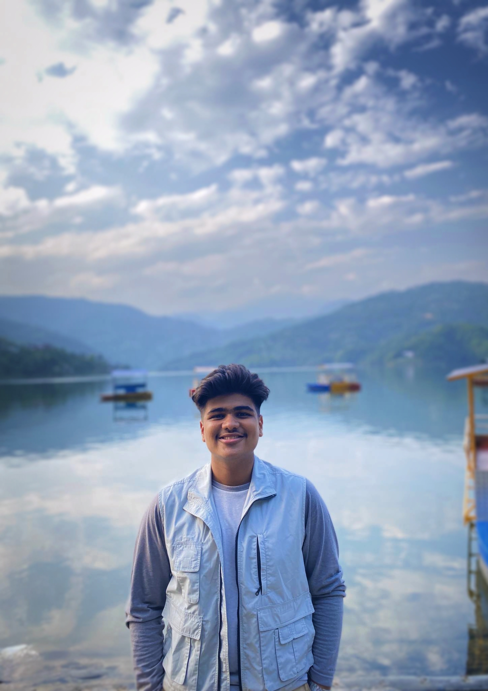

My name is Prabhab Tiwari, and I'm a grade 11 student at SOS Hermann Gmeiner School in  Gandaki. I have an intense interest in all Computer related stuffs, and I hope to work as a Computer Expert in the future! On December 23, 2006, I was born in Pokhara, Nepal. In my early years, I was fascinated by all the technological gadgets. At the age of seven, my grandfather gave me a brand-new desktop Computer from where I began working with a variety of Computer applications, including Word, Excel, Photoshop, and PowerPoint. My interest in technology grew as I worked on it, and I began learning how to code and other fascinating topics from my brother Ashish Tiwari. At the age of eleven, I practically know many things but there is much more to know about Computers.
Students who are interested in the computer field have a difficult existence. Many challenges had also come up for me during my learning phase. Despite the difficulty of programming and other tasks on my low-end PC, I persisted in my learning process and never gave up. My family usually criticizes me because they think I spend too much time on the computer, but I convinced them and now they all are proud of me.